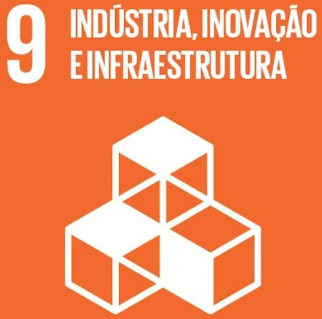

Resumo
Aluno da Universidade Tecnológica Federal do Paraná (UTFPR), otimista e que procura aprender sempre.
ODS que pretendo contribuir

Habilidades
- Criação de imagens e materiais digitais
- Desenvolvimento de sistemas e aplicações web
- Programação Front-end (HTML, CSS, JavaScript)
- Programação Back-end (PHP, MySQL, Node.js)
- Programação em Java e JavaScript
- Conhecimento em versionamento de código (Git/GitHub)
- Capacidade de trabalhar em equipe e boa comunicação
- Organização e foco em resultados
- Facilidade de aprendizado e adaptação a novas tecnologias
Educação
- Curso Técnico em Informática – Semipresencial – Etec Avaré/SP – CEETEPS (2017 – 2018)
- Ensino Superior em andamento – UTFPR (Universidade Tecnológica Federal do Paraná) – Campus Cornélio Procópio
Hobbies
- Sair
- Estudar
- Aprimorar conhecimentos